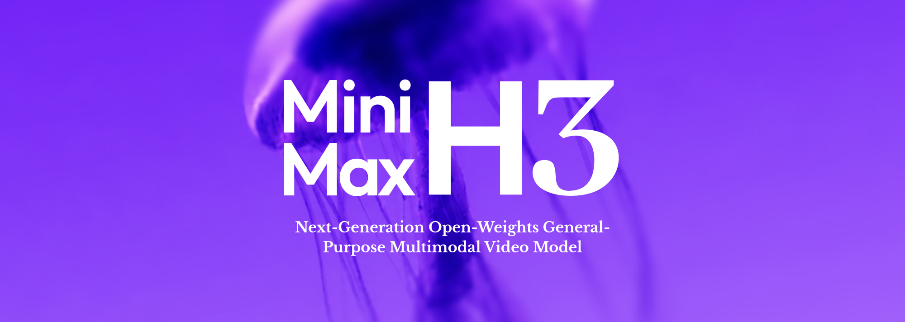

AI郵報 Threads｜MiniMax H3 開放權重：全模態影片模型進入 ComfyUI 與本機工作流

為什麼保存
這則 Threads 的重點不是「又一個影片生成模型」，而是 MiniMax H3 從封閉產品體驗往「開放權重 + Hugging Face + ComfyUI 工作流」移動。對 AI 學習雷達來說，它代表影片生成開始更接近 LLM / 圖像模型那種可部署、可量化、可包裝成產品底層能力的生態。
Threads 可見重點
Threads canonical：`https://www.threads.com/@aiposthub/post/DbkzM02kcBY`。AI郵報整理的重點包括：
- MiniMax 正式公開 MiniMax H3 模型權重，並上架 Hugging Face。
- H3 被描述為 330 億參數的全模態影片模型，可理解文字、圖片、影片、音訊。
- 輸出規格：最長 15 秒、24 FPS、最高 2K，並有原生立體聲。
- 支援玩法包含文字生成影片、圖片生成影片、指定首尾畫面、人物/產品一致性、參考影片動作與鏡頭運動、參考音訊保留聲音與語音特徵。
- 最多可混合 9 張圖片、3 段影片與 3 段音訊；Threads 文案說法是讓模型理解素材之間的關係。
- ComfyUI 已有 Day 0 支援；透過量化、權重壓縮與 VRAM offloading，社群正在嘗試把本機門檻降下來。
- 但 H3 採用 MiniMax 自訂 Community License；負責複雜多模態輸入理解的 H3-Context-IR 目前沒有完整一起開源。
官方與 Hugging Face 查核
MiniMax 官方 blog〈MiniMax H3: An Open Model Breaking the Boundaries Between Tasks and Modalities〉發布於 2026-07-31，說明 H3 是 general-purpose multimodal / omni-modal generation model，可理解 text、images、video、audio，並生成最高 2K、最長 15 秒、原生 stereo sound 的影片。
Hugging Face `MiniMaxAI/MiniMax-H3` model card 顯示：
| 項目 | 查核結果 |
|---|---|
| Repo | `MiniMaxAI/MiniMax-H3` |
| 狀態 | public、非 gated |
| Pipeline | `image-text-to-video` |
| Tags | text-to-video、image-to-video、video-to-video、text-to-audio-video、audio-video-generation、multimodal、synchronized-audio-video 等 |
| License | `other`，license name 為 `minimax-h3-community-license-agreement` |
| 查核時間點 | 2026-08-03，HF API 顯示 likes 約 1,085，數字會變動 |
ComfyUI 方面，Hugging Face `Comfy-Org/MiniMax-H3` 是 ComfyUI 重新包裝版本，model card 提供檔案放置位置，並連到 I2V、T2V、R2V workflow templates。這支持 Threads 所說的「ComfyUI 已開始支援」，但實際效能與相容性仍取決於顯卡、VRAM、量化版本與工作流設定。
技術定位：不是只有 T2V，而是 audio-video generation stack
MiniMax H3 的比較關鍵處在「把影片生成任務拆牆」：傳統工作流常把文生圖、圖生影片、配音、音效、音樂、剪輯分散到不同工具；H3 嘗試在同一套模型/系統中處理文字、圖片、影片與音訊上下文，再輸出同步聲音與影像。
官方 model card 將完整系統拆成三個模組：
- `H3-Context-IR`：理解與整理複雜多模態輸入，產生 Context Intermediate Representation。
- `H3-Base`：以 H3-Context-IR 輸出生成 768p 影音結果。
- `H3-Regenerate-2K`：把 768p 結果與原始 context 回餵，重新生成 2K 版本。
重要限制是：H3-Context-IR 依賴多階段 workflow 與多個 hosted models/services，官方說明它沒有包含在這次 open-source release；H3-Regenerate-2K 也因系統複雜，目前尚未開源，官方提供 API 驗證完整 2K workflow。也就是說，這次較精準的描述是「開放 H3-Base 相關權重與 ComfyUI 可用封裝」，不是完整官方雲端系統 1:1 本機釋出。
對欒帥的可用工作流想像
- **AI 影片實驗室**：用 ComfyUI workflow 快速比較 T2V / I2V / reference-to-video，建立自己的 prompt 與素材版本管理。
- **課程示範**：把「AI 影片生成從封閉網站走向本機節點工作流」做成一堂課的案例，對比 Gemini Omni、Veo、Wan、Seedance、Hailuo / MiniMax。
- **產品展示短片**：用產品圖、品牌圖、參考影片與音訊素材做多模態 brief，測試人物/產品一致性與聲音同步是否可用。
- **本機部署評估**：先不追求最高 2K，從 Comfy-Org 的量化/壓縮版本與 768p workflow 試起，記錄 VRAM、耗時、失敗率與輸出穩定性。
風險與限制
- **License 不是 Apache/MIT**：MiniMax H3 採 Community License；授權排除 EU、UK、韓國、美國等 Excluded Territories，且商用年營收超過 2,000 萬美元需另行授權。正式導入產品前必須由法律/合規再確認。
- **不是完整系統開源**：H3-Context-IR 與 H3-Regenerate-2K 未完整釋出，官方 2K 工作流仍牽涉 API；本機可跑不等於完整重現官方 demo。
- **硬體門檻仍高**：社群提到 RTX 3060 或 42.5GB 等說法需以實測為準；不同量化版本會影響品質、速度與穩定性。
- **音訊/肖像/品牌權利**：H3 支援參考音訊、人物/產品一致性與聲音特徵，使用時必須確保素材授權、人物同意、商標與廣告合規，生成內容也應清楚標示 AI 生成。
- **安全與公開發布**：License AUP 限制包含 impersonation、未標示機器生成內容、傷害他人、侵犯權利、選舉/假資訊等用途；公開或商用服務需加入防護與回報機制。
來源
- Threads：<https://www.threads.com/@aiposthub/post/DbkzM02kcBY>
- MiniMax 官方 blog：<https://www.minimax.io/blog/minimax-h3>
- Hugging Face：<https://huggingface.co/MiniMaxAI/MiniMax-H3>
- ComfyUI repack：<https://huggingface.co/Comfy-Org/MiniMax-H3>
- Hailuo AI：<https://hailuoai.video>